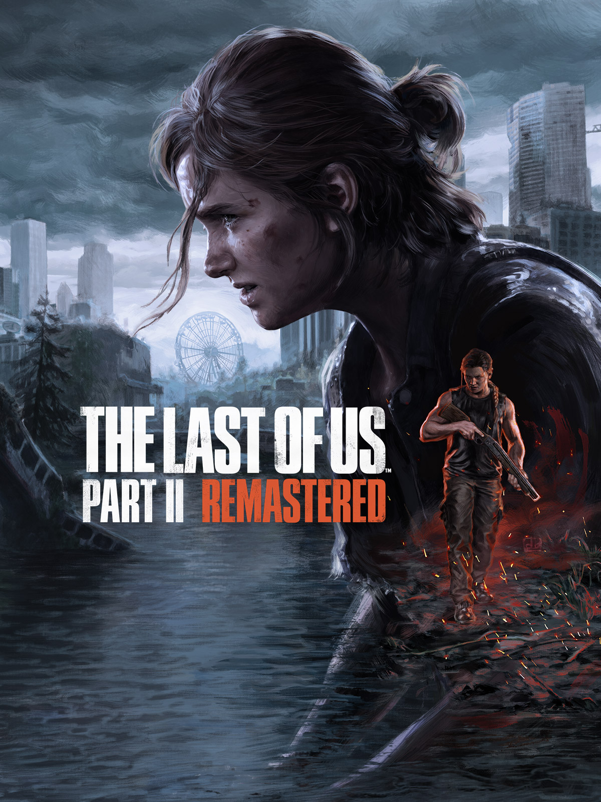

Assassin's Creed

DOOM
TLOU 2

God of War

GTA V

Red Dead 2

Elden Ring

F1 25

Caso seu jogo não apareça aí, baixe o nosso programinha clicando nesse botão: (Não precisa jogar os arquivos no Steam Tools, ele faz tudo automático pra você)
Após baixar o arquivo winrar do site, você vai extrair o arquivo winrar, depois você vai abrir o SteamTools e jogar os arquivos dentro dele
(Ele tem que estar aparecendo na tela para você jogar os arquivos)